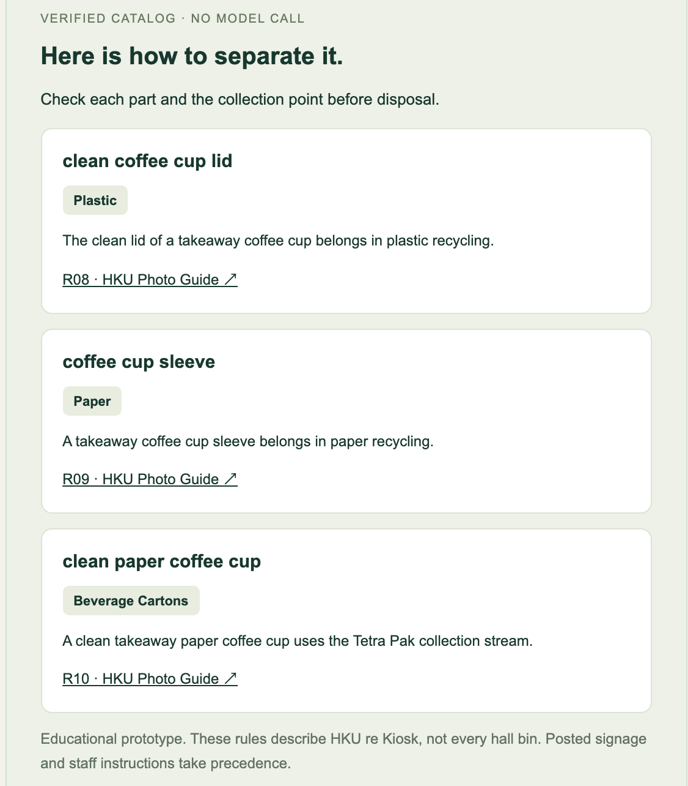

HKU · AILT9019 · Group 12
Where does each part of a coffee cup go?
HallSort helps students sort everyday items at HKU re Kiosks. Enter an item to see its parts, collection categories and the campus guidance behind each result.
Final demo · 1 minute 31 seconds
See HallSort in use
The final build sorts a coffee cup set, refuses an unknown item and labels a local safety check in AI mode. English synthetic narration and captions explain the recorded actions and the model test history.
Open the recording on GitHubWhat the team built
HallSort is a small application over published guidance. The recycling rules belong to HKU. The routing, the validation and the refusal behaviour belong to us.
| Part | Origin | What it does |
|---|---|---|
| Rule catalog and aliases | Team | 16 rules mapped to the HKU poster and Photo Guide, with 17 catalog entries and their alias lists. |
| Whole-request refusal | Team | An unknown or hazardous part refuses the entire query instead of quietly classifying the parts it recognises. |
| Answer validation | Team | Rejects a model answer whose rule ID does not exist or whose category disagrees with the cited rule. |
| Source rendering | Team | The explanation and the link come from the server's rule record, never from the model. |
| Evaluation harness | Team | 36 fixed catalog cases, 26 contract tests, and a serial live runner that stops after two failures. |
| Routes and static serving | FastAPI | HTTP endpoints and the built HTML, CSS and JavaScript. |
| Request and response schemas | Pydantic | Type checks, the 400-character limit and the eight-part limit. |
| Language interpretation | Bailian qwen3.8-flash | Maps a free-text description to rule IDs in AI mode. It never writes the bin category or the link. |
Three decisions that came from the domain
- Beverage cartons are their own stream. HKU does not put a paper cup in Paper, so the app does not either. A clean cup returns R10, not R09.
- Food waste is withheld. No applicable local rule was verified, so the app refuses rather than guessing.
- "Not accepted" stays guide-specific. It means excluded by this guide, not "put it in general waste".
A case where it refuses
The boundary we designed for is a query the guide cannot answer. office paper + mystery object names one supported item and one unsupported one. The easy behaviour is to classify the paper and ignore the rest. HallSort declines the whole request.
| Query | Expected | Observed, live app |
|---|---|---|
office paper | Classified as Paper, R01 | Paper, R01, HKU Recycling 101 poster |
office paper + mystery object | Refused, zero parts, no bin assignment | status: refused, parts: [], no bin |
lithium battery | Refused by a local check, no model call | Refused, hazardous-waste message, no bin |
Recorded 19 November 2026 against the hosted instance. The refusal path is the reason the app can say "I do not know" without inventing an answer.

clean takeaway coffee cup set.A recorded run
The app returns one card per separable part, each with the rule that decided it and the campus source behind it. The label above the result says which path produced it, so a catalog lookup is never presented as a model answer.
The same description in AI mode produced R10, R08 and R09 with the provider named in the label. AI mode needs a provider key on the server, and the public host has none, so the hosted app runs catalog mode only. The recording above shows the AI path working against the course provider on 25 October.
What we tested
On 19 November, the final Windows build passed 26 contract tests and all 36 fixed catalog cases. The live evaluation stopped after two unavailable responses. A direct provider check returned HTTP 403 with an access denial.
On 25 October, the first live run produced 30 passes across 32 examples. A later run passed all 32. The live suite used AI-authored regression examples and included local refusals. Accuracy on unseen items remains unmeasured by these runs.
Run it locally
Catalog mode needs no API key and no network access after install. Python 3.12 or 3.13.
git clone https://github.com/Isaiah-WU/ailt9019-hallsort
cd ailt9019-hallsort
python3 -m venv .venv
.venv/bin/python -m pip install -r requirements-lock.txt
.venv/bin/python -m uvicorn main:app --host 127.0.0.1 --port 8019Open 127.0.0.1:8019 and enter clean takeaway coffee cup set. Expect R08 Plastic, R09 Paper and R10 Beverage Cartons. Then enter office paper + mystery object and expect a refusal with no bin assignment.
.venv/bin/python -m pytest -q # 26 passed
.venv/bin/python evaluate.py # 36/36 passedAI mode needs a provider key set on the server, never in the browser. The README covers Windows, the lockfile and the optional provider configuration.
This page and the app are two different artefacts. The app is catalog-only on the public host because no provider key is set there; AI mode is demonstrated in the recording above.
Group 12
- WU HanlinBackend, rule catalog, citations
- WANG LeshenExample queries and expected outputs
- LUO ZihanInterface input handling, stale results
- YANG AndiReproduction testing, defect logging, demo recording